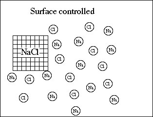

Suggested Readings:
Berner E. K. and Berner R. A. (1987) The global water cycle: Geochemistry and Environment: Prentice-Hall, Inc., Englewood Cliffs, NJ, Pages 142-155.
Berner R. A. (1980) Early Diagenesis: A theoretical approach: Princton University Press, Princton, NJ, Pages 90-117.
Clay (and associated) mineral precipitation and dissolution.
The overall chemical process of clay mineral precipitation can be viewed in terms of
- Nucleation mechanisms
- Crystal growth mechanisms
- Dissolution mechanisms
The entire process can be understood by examining the energetic changes associated with crystallization.
Consider the edge of a clay structure, where ions or molecules are bound to the surface. Because only one side is bound, it has a greater amount of energy than the same ion in the interior of the clay.
For example potassium in illite:

-----------------------------------------> edge of xtal
It takes excess energy to move an atom of potassium from the interior of the structure.
For this reason, one mole of a fine illite has more energy than one mole of coarse illite.
This excess energy is known as interfacial free energy.
This energy depends upon the nature of the material in contact with the surface. For example the interfacial energy of the surface in contact with an aqueous solution is going to be different then the same surface in contact with air.
For crystals larger than about 2 µm, the interfacial free energy is very small, relative to the bulk free energy (ΔGbulk). However, for the crystallization of a phase from solution, the free energy of formation (ΔGn) for a crystallite can be expressed as:
ΔGn = ΔGbulk + ΔGinterf (1)
where:
bulk and interf refer to the bulk and interfacial free energies.
Recalling that Ω is the saturation index (ratio of ion concentration activity product to the ion equilibrium activity product, then it can be shown that for the case of super-saturation,
ΔGbulk = -nkBTlnΩ (2)
where:
n = number of atoms or ions precipitated to form the crystal
kB = Boltzmann constant
T = absolute temperature
A new parameter may be defined which is the specific interfacial free energy between crystal and solution (σ).
Where,
σ = dG interf / dA (3)
and A = surface area of the crystal.
Estimated values for interfacial free energy of solids in water
(from table
5-1 Berner 1980)
|
Substance |
σ (erg/cm2) |
|
Calcite |
80 |
|
Gypsum |
76 |
|
Silica glass |
46 |
|
Sylvite |
30 |
|
Hematite |
1200 |
|
Goethite |
1600 |
Note: Low values for salts of carbonate and sulfate.
High value for oxides and hydroxides.
Clay values???
If σ is not a function of A, then the above equation can be integrated and combined with equation (1) to show that:
ΔGn = -nkBTlnΩ + σA (4)
Now if the area (A) is defined as
A = b V2/3 (5)
and
V = nnn ( 6)
where:
{kind=link}
b = geometric shape factor
nn = volume of an atom or ion in crystal
Equation 4 can be written so as the express the free energy of formation of a single crystal from a supersaturated solution as a function of supersaturation of the solution and the number of atoms in the crystal n.
ΔGn = -nkBTlnΩ + σn2/3nn2/3 b (7)
Above is a plot of the free energy of formation of a single crystal as a function of the number of atoms in a crystal. The parameter values to the right represent an abrbitrary choice of numbers and when used in equation 7 they function is plotted as black squares. The different colored plots are sensitivity tests to show the effect of changing parameter values on the critical nucleation size.
For example, note that at higher degrees of supersaturation both the amount of free energy and the size of the crystal are smaller.
Note the free energy maximum necessary for nucleation. Formation of a crystal form in solution requires an increase in free energy.
It can also be shown that there is a strong dependence upon the rate
of
nucleation and the degree of supersaturation (Ω).
There is even a stronger dependence upon of nucleation rate upon
Temperature,
shape factor and specific interfacial free energy (T, b, σ)
Crystal Growth
Involves three processes:
1) transport of ions to the crystal surface
2) surface reactions:
- a. adsorption
- b. surface nucleation
- c. surface diffusion
- d. dehydration
- e. cation exchange
3) removal of products from the crystal.
Transport controlled growth
Growth is limited by the rate at which ions or complexes can migrate to the surface via diffusion and advection.

Surface controlled growth.
Rate of growth is limited by the surface reactions.

* most reactions occurring during weathering are surface controlled reactions.
Chemical weathering and clay mineral formation
The nature of clay formed during the weathering process depends upon three factors:
- The mineralogical and textural composition of the parent rock.
- The composition of the aqueous solution.
- The nature of the fluid flow (i.e., rate of water flow and pore network).
These factors are most commonly studied in terms of:
- rock type
- relief
- climate (rain and temperature)
- vegetation
- time
Except in regions dominated by steep terrains and/or glacial environments, the clay minerals present are usually a result of processes occurring in the soil horizon.
Weathering reactions are classified by the nature of the attacking substance and manner in which the primary mineral is attacked. If the mineral simply dissolves, then the mechanism is referred to as congruent dissolution. If a secondary mineral forms (i.e., a clay mineral), then the reaction is referred to as incongruent dissolution.
Attacking agents include
1) soil acids, 2) dissolved oxygen and 3) water itself.
* see tables 4.3 and 4.4 from Berner and Berner (1987).